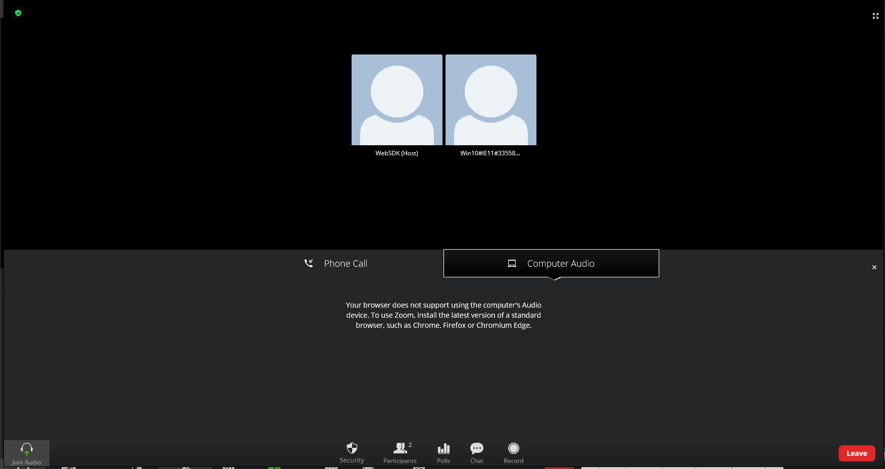
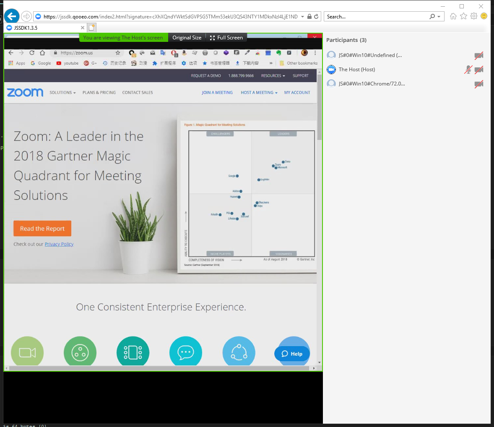

disable 2AV
isSupportAV is use to enable or disable 2AV feature.
when init WebSDK with isSupportAV=false or join meeting even though isSupportAV=true.
the user can't use video and computer audio
ZoomMtg.init({
isSupportAV: false,
});joined meeting

host sharing

IE issue
For currently. we don't support 2AV on IE. and if you load js_media.js directly on IE it will have an error.
So please detect not IE browser and load js_media.js, so the isSupportAv does not just require config but also require the no ie environment.
you can do this use blow codes.
function requestWasmFunc(url) {
var xmlhttp;
if (window.ActiveXObject) xmlhttp = new ActiveXObject('Microsoft.XMLHTTP');
else xmlhttp = new XMLHttpRequest();
xmlhttp.onreadystatechange = function () {
if (this.readyState == 4 && this.status == 200) {
try {
console.log('pre load wasm success:', url);
} catch (e) {
console.warn('pre load wasm fail:', url);
}
}
};
xmlhttp.open("GET", url, true);
xmlhttp.send();
}
function loadScript(url, callback) {
var script = document.createElement("script");
script.type = "text/javascript";
if (script.readyState) { //IE
script.onreadystatechange = function () {
if (script.readyState == "loaded" || script.readyState == "complete") {
script.onreadystatechange = null;
if (typeof callback === 'function') {
callback();
}
}
};
} else { //Others: Firefox, Safari, Chrome, and Opera
script.onload = function () {
if (typeof callback === 'function') {
callback();
}
};
}
script.src = url;
if (typeof document.body.append === "function") {
document.getElementsByTagName("head")[0].append(script);
} else {
document.getElementsByTagName("head")[0].appendChild(script);
}
}
var userAgent = navigator.userAgent.toLowerCase();
var isIE = !/opera|opr\/[\d]+/.test(userAgent) && /(msie|trident)/.test(userAgent);
var isSupportAv = !isIE && !!parseInt(document.getElementById('meeting_av').value);
if (isSupportAv) {
var fetchAudioUrl = 'lib/av/audio.encode.wasm';
var fetchVideoUrl = 'lib/av/video.decode.wasm';
requestWasmFunc(fetchAudioUrl);
requestWasmFunc(fetchVideoUrl);
loadScript("lib/av/js_media.js");
}
var fetchSharingUrl = 'lib/av/sharing.wasm';
requestWasmFunc(fetchSharingUrl);